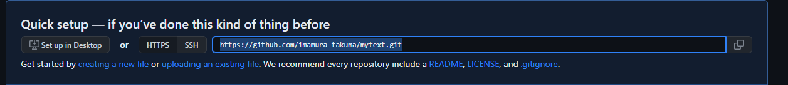
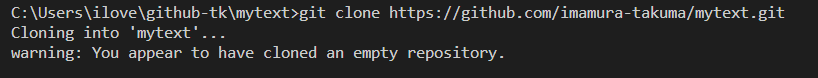
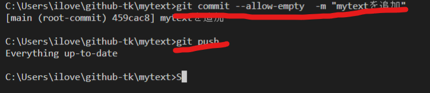
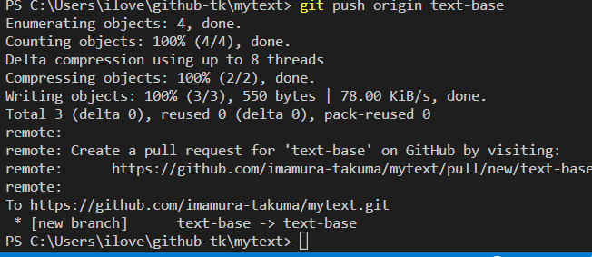
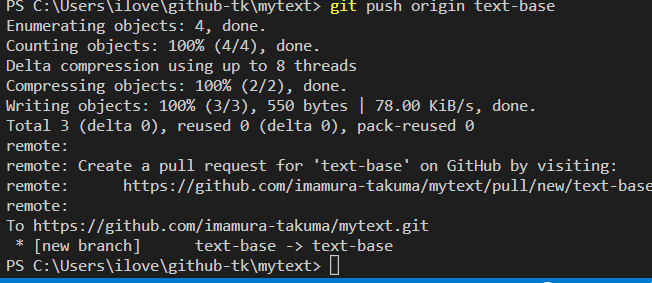
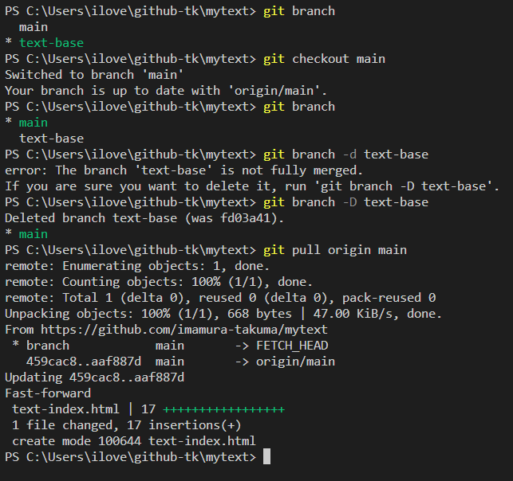

2.github開発の流れ
概要
githubでのcommitやrepositoryの仕方をまとめた
1.githuで新しいRepositoreを作る
※Repositoreはソースを保管するための場所、共有しやすメリットがある2.ディレクトリーを作る
※コードを保管するフォルダ、ファイルのイメージ3.RepositoreのURLをコピーし自分のエディターcloneする
※git clone url(repositoreした際のurl) 
git clone (repositoreした際のurl) //cloneする
git code . //空のエディターが新しく開く

※code . 空のエディターが新しく開く
4.commitする
git commit --allow-empty -m"コメント" //空の状態でcommit
git push origin main または git push //mainのbranchをgithubにコードを送る（push）

※ローカルのコードをリモートのgithubにpushするイメージ
5.branchを作る
※meinのコードを慎重に取り扱うため
gti branch //現在のbranchの確認
git branch 新しいbranch名 //新しいbranchの作成
git checkout 移動したいbranch名 //branchの移動

6.コード編集
※ソースコードを編集する
7.branchをcommitする
git checkout main //mainのbranchに戻る
git add*
git commit -m "メッセージ" //commit
git push origin branch名 //commitしたいbranch名
 

8.github上の操作
1.pullrequestでコードのレビューをする
2.問題がなっかたらMerge pull request → Confirm mergenを押しmain branchに動機する
3.完了したら不要なブランチは削除する
※まだリモート上でしかブランチを削除していないためローカル上のbranchを削除する必要がある9.github上にある変更したmain branchをもってくる（pull）
git branch //現在のbranchの確認
git checkout main //branchの移動
git branch -D text-base //branchの削除
git pull origin main //github上にある変更した最新のmain branchをもってくる
